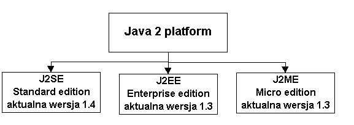

1. Czym jest Java 1.1. Java jako uniwersalny jêzyk programowania
Oczywi¶cie, przede wszystkim Java jest uniwersalnym jêzykiem programowania Sk³adniowe podobieñstwo do C/C++ czyni ten jêzyk ³atwy do opanowania przez programistów znaj±cych te jêzyki. Jednocze¶nie Java ma ambicje udoskonalania swoich wzorców. Programista Javy w zasadzie nie musi martwiæ siê zarz±daniem pamiêci± (w Javie funkcjonuje automatyczne od¶miecanie - "garbage collector", polegaj±ce na automatycznym usuwaniu przydzielonych wcze¶niej a nieu¿ywanych obszarów pamiêci). Java nie dopuszcza arytmetyki wska¼nikowej, która pozwala na odwo³ywanie siê do dowolnych obszarów pamiêci i jest czêst± przyczyn± b³êdów. ¦cis³a kontrola typów na etapie kompilacji pozwala unikaæ prostych b³êdów, a konwersje przeprowadzane w fazie wykonania s± bezpieczne, bowiem nigdy nie mo¿e powstaæ sytuacja przekszta³cenia danych do niew³a¶ciwego dla nich typu (chodzi oczywi¶cie o typy obiektowe, poprawno¶æ konwersji typów prostych jest gwarantowana przez kompilator). Wymuszana przez kompilator obs³uga wyj±tków (inaczej mówi±c - b³êdów) czyni programowanie w Javie jeszcze bardziej bezpiecznym i niezawodnym, a wbudowane w jêzyk podstawowe elementy wspó³bie¿no¶ci umo¿liwiaj± ³atwe tworzenie i synchronizowanie równolegle dzia³aj±cych w±tków (czyli równolegle wykonywanych fragmentów tego samego programu). Wszystkie wymienione wy¿ej - teraz mo¿e do¶æ tajemniczo brzmi±ce - pojêcia bêdziemy szczegó³owo poznawaæ w trakcie wyk³adów. Niew±tpliwie jednak najwa¿niejsz± cech± Javy jako "czystego jêzyka" jest jej obiektowo¶æ. Ogólnie, oznacza to, i¿ programy pisze siê w Javie ³atwiej i bardziej niezawodnie ni¿ w jêzykach nieobiektowych. Niestety, Java nie jest jêzykiem w pe³ni obiektowym. Wystêpuj± w niej bowiem konstrukcje nieobiektowe (np. typy proste), co powoduje pewne niespójno¶ci syntaktyczne i semantyczne. Ju¿ w tym wyk³adzie zaczniemy powoli oswajaæ siê z podej¶ciem obiektowym. Wiêkszo¶æ innych wa¿nych cech Javy, o których by³a mowa wy¿ej , wynika z wysokich wymogów bezpieczeñstwa, stawianych jêzykowi przez jego twórców. Co¶ za co¶ - czêsto oznacza to pewne ograniczenie swobody i elastyczno¶ci programisty, a tak¿e (czasem nadmierne) zwiêkszanie pracoch³onno¶ci pisania kodu. Zalety Javy jako czystego jêzyka programowania mog± byæ dyskusyjne. Ale nie dlatego warto Javy siê uczyæ, ¿e jest to jêzyk idealny (czy w ogóle s± takie?). Du¿o wa¿niejsza jest jej uniwersalno¶æ we wszelkich zastosowaniach informatycznych. Uniwersalno¶æ, zapewniana przez wieloplatformowo¶æ Javy oraz wynikaj±c± st±d (zrealizowan±!) mo¿liwo¶c stworzenia przebogatych standardowych "bibliotek" na tyle zintegrowanych z sam± Jav±, ¿e praktycznie bêd±cych jej synonimem. 1.2. Wieloplatformowo¶æ Javy
Java jest jêzykiem interpretowanym, co umo¿liwia wykonywanie "binarnych" kodów Javy bez rekompilacji praktycznie na wszystkich platformach systemowych. Kod ¼ród³owy (pliki z rozszerzeniem ".java") jest kompilowany przez
kompilator Javy do kodu bajtowego ( B-kodu, pliki z rozszerzeniem ".class"), ten
ostatni za¶ jest interpretowany przez tzw. wirtualn± maszynê Javy - JVM (jest
to program i/lub odpowiednie biblioteki) , zainstalowan± na danej platformie
systemowej lub wchodz±c± w sk³ad przegl±darki WWW. kod kompilacja ³adowanie JVM (.java) javac (.class) Oznacza to, teoretycznie, ¿e raz napisany i skompilowany program bêdzie dzia³al tak samo na wszystkich platformach systemowych. Idea wrêcz doskona³a (jak wiele wysi³ku i kosztów poch³ania przenoszenie programów z jednej platformy na drug±). Jej praktyczna realizacja (mimo wielu trudno¶ci) jest coraz bli¿sza i coraz bardziej kusz±ca (nieunikniona mniejsza efektywno¶æ i wiêksza zasobo¿erno¶æ dzia³ania aplikacji Javy w porównaniu z apliakacjami natywnymi - czyli napisanymi "pod konkretny system operacyjny" - jest równowa¿ona przez rozwój sprzêtu). Sama wieloplatformowo¶æ jêzyka interpretowanego nie jest czym¶ nadzwyczajnym. Ale twórcy Javy wyci±gnêli z tej jej cechy bardzo konsekwentne wnioski. Stworzyli mianowicie bogaty zestaw standardowych bibliotek i narzêdziowych interfejsów programistycznych (API), które umo¿liwiaj± w jednolity, niezale¿ny od platformy sposób programowaæ graficzne interfejsy u¿ytkownika (GUI), dostêp do baz danych, dzia³ania w sieci i wiele innych. Podstawowy (ogromny zreszt±) zestaw takich bibliotek nazywa siê Java Core
API (albo JDK albo Java 2 SDK). Oprócz tego wprowadzono prosty mechanizm
nazywany Java Extension Framework, który umo¿liwia rozszerzanie standardowego
pakietu o nowe (te¿ standardowe!) biblioteki. 1.3. Java jako uniwersalne ¶rodowisko programowania GUI
Java - w swoich standardowych bibliotekach - dostarcza ³atwych w u¿yciu i niezale¿nych od platformy ¶rodków programowania graficznych interfejsów u¿ytkownika. Proste, nieco surowe komponenty wizualne od wielu ju¿ lat mo¿na by³o ³atwo uzyskaæ za pomoc± czê¶ci API Javy nazywanej AWT (Abstract Windowing Toolkit). By³y one jednak zbyt ubogie dla powa¿nych aplikacji, ponadto ich wygl±d zale¿a³ od platformy systemowej. Pojawi³ siê wiêc projekt Swing, maj±cy g³ównie na celu wzbogacenie istniej±cych i dodanie nowych elementów GUI oraz uniezale¿nienie wygl±du komponentów od platformy systemowej. Swing, zrealizowany pocz±tkowo jako dodatek do wersji Javy 1.1, nastêpnie wszed³ w sk³ad tzw. J F C ( Java Foundation Classes) - integralnej czêsci platformy Java 2 (wersje 1.2.x, 1.3 i 1.4). JFC obejmuje AWT wraz ze wzbogacon± grafik± dwuwymiarow± (Graphics2D), Swing oraz mechanizmy "drag and drop" ("przeci±gnij i upu¶æ") w aplikacjach Javy i na styku tych aplikacji z natywnymi aplikacjami platformy systemowej. 1.4. Java jako uniwersalne ¶rodowisko dostêpu do baz danych
W sk³ad standardu Javy wchodzi JDBC API (Java Database Connectivity API) - zestaw ¶rodków, umo¿liwiaj±cych ³±czenie siê aplikacji i apletów Javy z (niemal) dowolnymi relacyjnymi bazami danych (systemami zarz±dzania relacyjnymi bazami danych) i wykonywanie na nich operacji bazodanowych. ¦rodki te s± ³atwe w u¿yciu, bazuj± bowiem na powszechnym standardzie SQL - jêzyka programowania relacyjnych baz danych. Niestandardowy pakiet JavaBlend udostêpnia narzêdzia ³atwego
tworzenia aplikacji biznesowych , integruj±cych obiekty Javy z relacyjnymi
bazami danych. Umo¿liwia to realizacjê podej¶cia obiektowego w ¶rodowisku
relacyjnych baz danych 1.5. Java jako uniwersalne ¶rodowisko programowania multimediów
W Java Core API znajdziemy na pewno uniwersalne ¶rodki przetwarzania Dotychczasowe standardowe rozszerzenia Javy:
powoli wchodz± do podstawowego standardowego API. Je¶li jako multimedia potraktowaæ telewizjê i telefon - to i tu Java dostarcza odpowiednich interfejsów programistycznych: Java TV API oraz JavaPhone API, umo¿liwiaj±cych oprogramowanie TV i telefonów komórkowych. 1.6. Java jako uniwersalne ¶rodowisko programowania w sieci (klient-serwer)
Java zawiera standardowe ¶rodki tworzenia:
Istnieje równie¿ standardowe rozszerzenie Javy s³u¿±ce do obs³ugi poczty elektronicznej ( JavaMail API). Oparta na Javie technologia Java Server Pages (JSP) umo¿liwia:
1.7. Java jako ¶rodowisko programowania w systemach
rozproszonych
W standardzie Javy zapewniono komunikacjê z rodzimymi programami platformy systemowej (JNI - Java Native Interface) oraz ¶rodki komunikowania siê obiektów w ¶rodowiskach rozproszonych. Z kolei RMI - Remote Method Invocation - zapewnia komunikacjê pomiêdzy obiektami napisanymi w Javie, funkcjonuj±cymi w równoleg³ych procesach wykonywanywanych w ¶rodowisku rozproszonym, np. na dwóch ró¿nych komputerach sieci. Interakcja obiektów Javy i obiektów realizowanych w innych jêzykach programowania zapewniona jest przez implementacjê przez Javê standardu CORBA ( Common Object Request Broker Architecture. Oznacza to, ¿e Java mo¿e byæ jêzykiem tworzenia tzw. middleware - oprogramowania po¶rednicz±cego i integruj±cego dzia³anie aplikacji napisanych w ró¿nych jêzykach i na ró¿nych platformach systemowych i sprzêtowych. 1.8. Java jako ¶rodowisko budowanie programów z gotowych komponentów
Koncepcja budowania programu z gotowych cegie³ek, komponentów "wilelokrotnego u¿ycia" ("reusable components"), znalaz³a w Javie urzeczywistnienie w postaci specyfikacji JavaBeans. Bean - znaczy ziarno, a JavaBean jest w³a¶nie komponentem ponownego u¿ytku (ziarnem Javy). Komponenty takie (wizualne lub odzwierciedlaj±ce logikê) mog± byæ ³atwo wykorzystywane przy budowie du¿ych aplikacji. Wbudowanie ziarna w aplikacjê odbywa siê zwykle w pewnym srodowisku programistycznym, a programowanie polega na: umieszczeniu (za³adowaniu) ziarna, po³±czeniu go z aplikacj± i ew. dostosowaniu jego w³a¶ciwo¶ci. Enterprise Java Beans (EJB) jest zestawem ziaren i ¶rodków implementacji logiki biznesowej, dzia³aj±cych w systemach rozproszonych z obs³ug± transakcji bazodanowych i hurtowni danych. Przy budowie programów u¿ywane s± gotowe ziarna ze sk³adnic "problemowych" (np. ubezpieczenia, banki etc.) oraz ¶rodki EJB, umo¿liwiaj±ce ³atwe tworzenie nowych ziaren "biznesowych". 1.9. Java jako ¶rodowisko przetwarzania dokumentów XML
XML - Extended Markup Language - jest rozszerzalnym jêzykiem znacznikowym,
pozwalaj±cym na opisywanie struktury i tre¶ci dokumentów i separowanie tre¶ci
od jej prezentacji (w przeciwieñstwie HTML okre¶la tylko wygl±d dokumentu i nie
mo¿e byæ rozszerzony - tzn. zestaw znaczników jest sta³y). Java okaza³a siê - ze wzglêdu na sw± obiektowosæ i wieloplatformowo¶æ - doskona³ym jêzykiem do przetwarzania dokumentów XML. Gotowe ¶rodki przetwarzanie XML wchodz± w standard Javy (w wersji 1.4). 1.10. Mikro - Java
Do oprogramowania obs³ugi sprzêtu elektronicznego (np. urz±dzeñ domowych,
konsumpcyjnych) o s³abych parametrach informatycznych stworzono w Javie
standardow± technologiê JINI. 1.11. Dlaczego warto uczyæ siê
Javy?
Có¿... Poznali¶my co najmniej 10 odpowiedzi na to pytanie. Je¶li nawet uznamy sam "czysty jêzyk" za nieco niekonsekwentny czy uci±¿liwy, to zachêt± do przezwyciê¿enia wszelkich obiekcji jest ogromna uniwersalno¶æ Javy. Jak wspomnia³em wcze¶niej - jest to jedyny jêzyk programowania tak naprawdê zawieraj±cy standardowe i uniwersalne ¶rodki realizacji niemal wszelkich zadañ informatycznych. To wielkie bogactwo mo¿liwo¶ci niew±tpliwie sk³ania do jego poznania. Oczywi¶cie najpierw trzeba zaznajomiæ siê z podstawami Javy. Na tej drodze - pewnie - du¿± trudno¶ci± bêdzie obiektowo¶æ Javy. Dlatego ju¿ za chwilê - ogólnie, na poziomie koncepcyjnym - przyjrzymy siê niektórym cechom podej¶cia obiektowego. Wcze¶niej jednak - niejako dla porz±dku - przedstawione zostanie nazewnictwo wersji Javy. 1.12. Wersje Javy
Pierwsze, powszechnie dostêpne wersje Javy by³y numerowane 1.0.x. Ubogi zestaw komponentów GUI, z³y model obs³ugi zdarzeñ - to ich g³ówne wady. Nowe wersje numerowane 1.1.x wprowadzi³y kilka ogromnie wa¿nych zmian i
dodatków, m.in.: nowy model obs³ugi zdarzeñ, mo¿liwo¶ci dynamicznego
kszta³towania dzia³ania programu (refleksja) oraz JavaBeans. Pojawi³ siê te¿
Swing z nowymi komponentami. Nastêpna generacja - Java 1.2.x - nie by³a ju¿ tak rewolucyjna. Faktycznie
zintegrowa³a istniej±ce ju¿ i dzia³aj±ce w Javie 1.1.x rozwi±zania, dodaj±c
nowe, ciekawe, u¿yteczne (ale ju¿ nie tak rewolucyjne) elementy, m.in.
Graphics2D i kolekcje. Wygl±da to mniej wiêcej tak: 
|